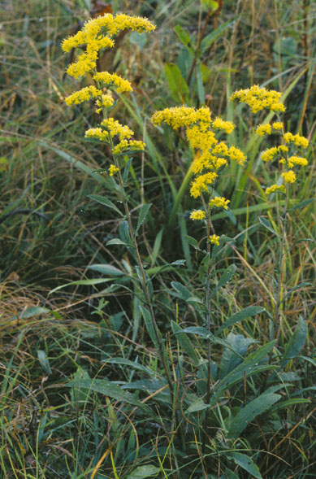

Solidago nemoralis
Family: Asteraceae
Old-Field Goldenrod
Swink/Wilhelm #3
FLOWERING: Mid-August to early November
SEED TIMING: Early October to mid-November
HABITAT: Dry prairie
DIAGNOSTIC FEATURES: 1 to 3 feet. Rough, gray-green, hairy leaves, reduced towards top. Grayish stem, densely covered with fine hairs. Single, slender, one-sided plume of rich yellow blossoms. Tiny leaf-like fascicles in the leaf axils
TO PICK: May pick entire head as soon as pappus begins to appear.